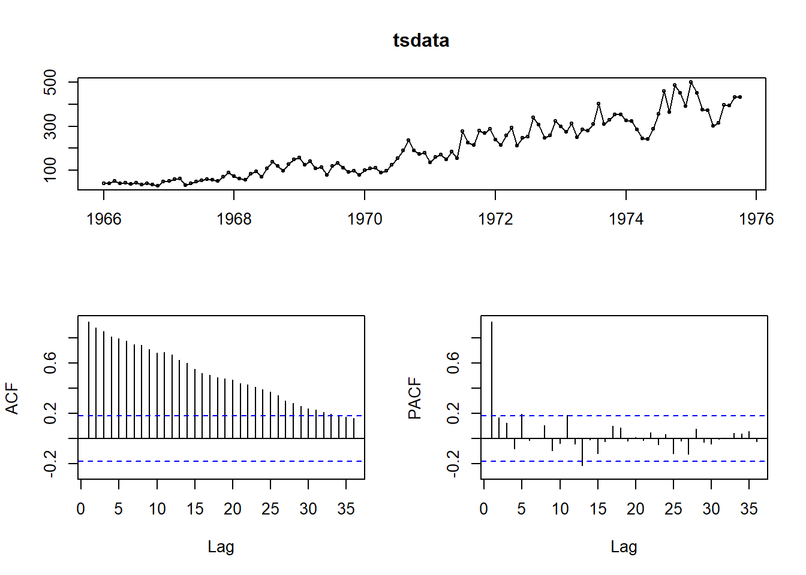
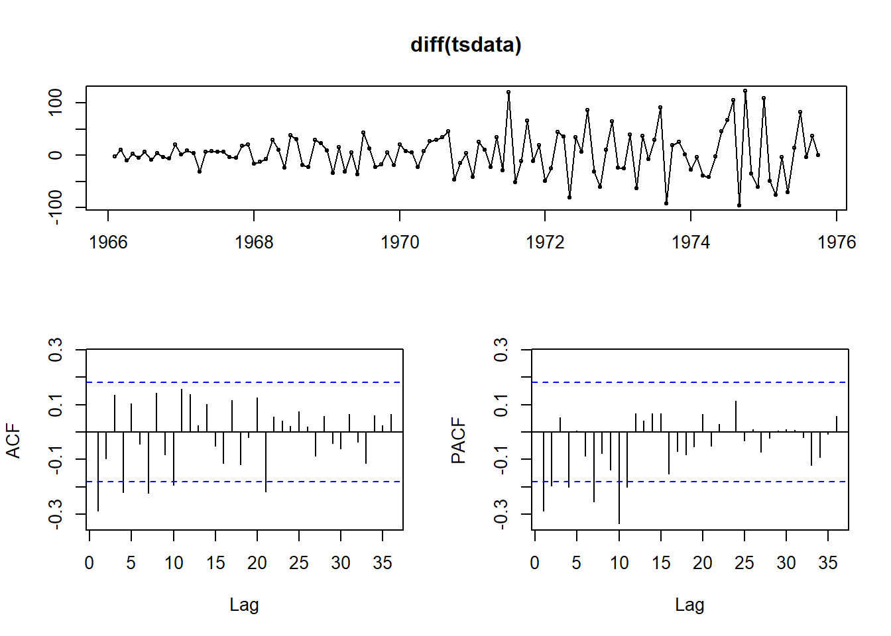
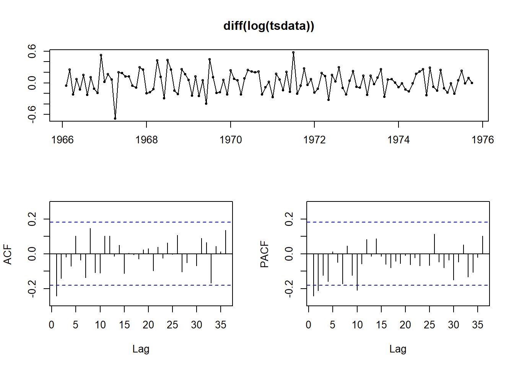
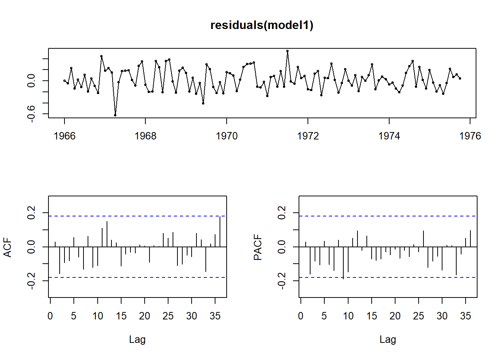
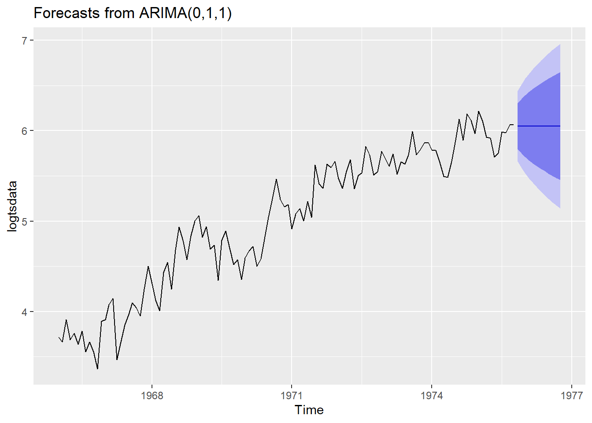
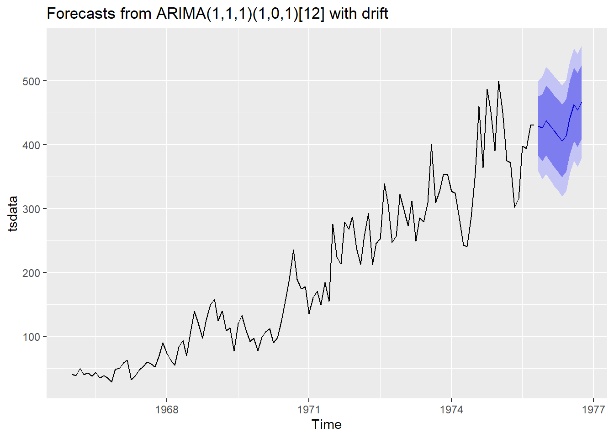

library(forecast)Registered S3 method overwritten by 'quantmod':
method from
as.zoo.data.frame zoo library(equatiomatic)library(forecast)Registered S3 method overwritten by 'quantmod':
method from
as.zoo.data.frame zoo library(equatiomatic)data <- c(41, 39, 50, 40, 43, 38, 44, 35, 39, 35, 29, 49, 50, 59, 63, 32, 39, 47, 53, 60, 57, 52, 70, 90, 74, 62, 55, 84, 94, 70, 108, 139, 120, 97, 126, 149, 158, 124, 140, 109, 114, 77, 120, 133, 110, 92, 97, 78, 99, 107, 112, 90, 98, 125, 155, 190, 236, 189, 174, 178, 136, 161, 171,149, 184, 155, 276, 224, 213, 279, 268, 287, 238, 213, 257, 293, 212, 246, 253, 339, 308, 247, 257, 322, 298, 273, 312, 249, 286, 279, 309, 401, 309, 328, 353, 354, 327, 324, 285, 243, 241, 287, 355, 460, 364, 487, 452, 391, 500,451, 375, 372, 302, 316, 398, 394, 431, 431)
tsdata <- ts(data, frequency = 12, start=c(1966,1))tsdisplay(tsdata)
tsdisplay(diff(tsdata))
tsdisplay(diff(log(tsdata)))
logtsdata <- log(tsdata)
model1 <- Arima(
logtsdata,
order=c(0,1,1),
seasonal=c(0,0,0),
include.mean=TRUE,
include.drift=FALSE
)tsdisplay(residuals(model1))
forecast(model1, 12) |>
autoplot()
model2 <- auto.arima(tsdata)summary(model2)Series: tsdata
ARIMA(1,1,1)(1,0,1)[12] with drift
Coefficients:
ar1 ma1 sar1 sma1 drift
0.4898 -0.9450 0.7961 -0.6433 3.3662
s.e. 0.1094 0.0563 0.2585 0.3258 0.5931
sigma^2 = 1304: log likelihood = -584.24
AIC=1180.47 AICc=1181.23 BIC=1197.04
Training set error measures:
ME RMSE MAE MPE MAPE MASE
Training set -0.3964842 35.18448 25.38799 -7.098119 16.55604 0.484277
ACF1
Training set -0.07319468forecast(model2, 12) |>
autoplot()
extract_eq(model2)\[ (1 -\phi_{1}\operatorname{B} )\ (1 -\Phi_{1}\operatorname{B}^{\operatorname{12}} )\ (1 - \operatorname{B}) (y_{t} -\delta\operatorname{t}) = (1 +\theta_{1}\operatorname{B} )\ (1 +\Theta_{1}\operatorname{B}^{\operatorname{12}} )\ \varepsilon_{t} \]